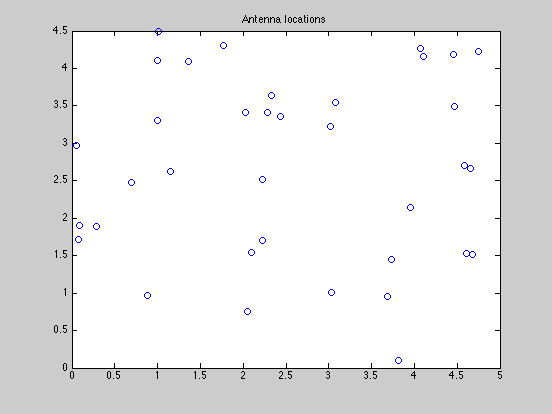
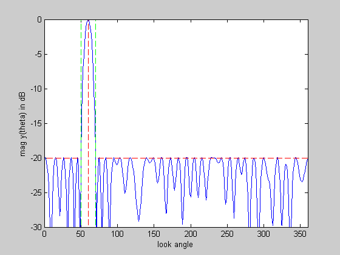
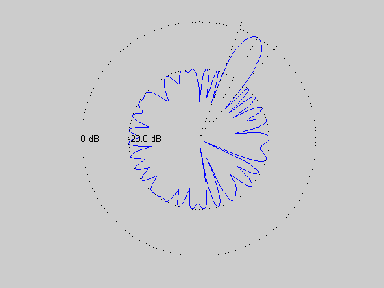

Minimize thermal noise power of an array with arbitrary 2-D geometry
ARRAY_GEOMETRY = '2D_RANDOM';
lambda = 1;
theta_tar = 60;
half_beamwidth = 10;
min_sidelobe = -20;
if strcmp( ARRAY_GEOMETRY, '2D_RANDOM' )
rand('state',0);
n = 36;
L = 5;
loc = L*rand(n,2);
elseif strcmp( ARRAY_GEOMETRY, '1D_UNIFORM_LINE' )
n = 30;
d = 0.45*lambda;
loc = [d*[0:n-1]' zeros(n,1)];
elseif strcmp( ARRAY_GEOMETRY, '2D_UNIFORM_LATTICE' )
m = 6; n = m^2;
d = 0.45*lambda;
loc = zeros(n,2);
for x = 0:m-1
for y = 0:m-1
loc(m*y+x+1,:) = [x y];
end
end
loc = loc*d;
else
error('Undefined array geometry')
end
theta = [1:360]';
A = kron(cos(pi*theta/180), loc(:,1)') + kron(sin(pi*theta/180), loc(:,2)');
A = exp(2*pi*i/lambda*A);
[diff_closest, ind_closest] = min( abs(theta - theta_tar) );
Atar = A(ind_closest,:);
ind = find(theta <= (theta_tar-half_beamwidth) | ...
theta >= (theta_tar+half_beamwidth) );
As = A(ind,:);
cvx_begin
variable w(n) complex
minimize( norm( w ) )
subject to
Atar*w == 1;
abs(As*w) <= 10^(min_sidelobe/20);
cvx_end
disp(['Problem is ' cvx_status])
if ~strfind(cvx_status,'Solved')
return
end
fprintf(1,'The minimum norm of w is %3.2f.\n\n',norm(w));
figure(1), clf
plot(loc(:,1),loc(:,2),'o')
title('Antenna locations')
y = A*w;
figure(2), clf
ymin = -30; ymax = 0;
plot([1:360], 20*log10(abs(y)), ...
[theta_tar theta_tar],[ymin ymax],'r--',...
[theta_tar+half_beamwidth theta_tar+half_beamwidth],[ymin ymax],'g--',...
[theta_tar-half_beamwidth theta_tar-half_beamwidth],[ymin ymax],'g--',...
[0 theta_tar-half_beamwidth],[min_sidelobe min_sidelobe],'r--',...
[theta_tar+half_beamwidth 360],[min_sidelobe min_sidelobe],'r--');
xlabel('look angle'), ylabel('mag y(theta) in dB');
axis([0 360 ymin ymax]);
figure(3), clf
zerodB = 50;
dBY = 20*log10(abs(y)) + zerodB;
plot(dBY.*cos(pi*theta/180), dBY.*sin(pi*theta/180), '-');
axis([-zerodB zerodB -zerodB zerodB]), axis('off'), axis('square')
hold on
plot(zerodB*cos(pi*theta/180),zerodB*sin(pi*theta/180),'k:')
plot( (min_sidelobe + zerodB)*cos(pi*theta/180), ...
(min_sidelobe + zerodB)*sin(pi*theta/180),'k:')
text(-zerodB,0,'0 dB')
text(-(min_sidelobe + zerodB),0,sprintf('%0.1f dB',min_sidelobe));
theta_1 = theta_tar+half_beamwidth;
theta_2 = theta_tar-half_beamwidth;
plot([0 55*cos(theta_tar*pi/180)], [0 55*sin(theta_tar*pi/180)], 'k:')
plot([0 55*cos(theta_1*pi/180)], [0 55*sin(theta_1*pi/180)], 'k:')
plot([0 55*cos(theta_2*pi/180)], [0 55*sin(theta_2*pi/180)], 'k:')
hold off
Calling SDPT3: 1098 variables, 73 equality constraints
For improved efficiency, SDPT3 is solving the dual problem.
------------------------------------------------------------
num. of constraints = 73
dim. of socp var = 1096, num. of socp blk = 342
dim. of free var = 2 *** convert ublk to lblk
*******************************************************************
SDPT3: Infeasible path-following algorithms
*******************************************************************
version predcorr gam expon scale_data
NT 1 0.000 1 0
it pstep dstep pinfeas dinfeas gap mean(obj) cputime
-------------------------------------------------------------------
0|0.000|0.000|3.8e+00|1.1e+02|1.2e+04| 2.953147e+01| 0:0:00| chol 1 1
1|1.000|0.980|3.4e-06|2.3e+00|3.2e+02| 2.162225e+01| 0:0:00| chol 1 1
2|1.000|0.720|5.3e-05|6.5e-01|9.5e+01| 1.793923e+01| 0:0:00| chol 1 1
3|0.723|0.666|2.7e-05|2.2e-01|3.5e+01| 1.004740e+01| 0:0:01| chol 1 1
4|0.744|0.714|6.1e-06|6.3e-02|1.1e+01| 3.011223e+00| 0:0:01| chol 1 1
5|0.857|0.543|8.6e-07|2.9e-02|2.2e+00|-2.485038e-01| 0:0:01| chol 1 1
6|0.889|0.338|1.5e-07|1.9e-02|8.6e-01|-6.285818e-01| 0:0:01| chol 1 1
7|1.000|0.456|4.4e-08|1.0e-02|3.7e-01|-6.589654e-01| 0:0:01| chol 1 1
8|1.000|0.546|1.7e-08|4.7e-03|1.3e-01|-6.582388e-01| 0:0:01| chol 1 1
9|0.951|0.547|5.2e-09|2.1e-03|4.9e-02|-6.549219e-01| 0:0:01| chol 1 1
10|0.912|0.381|1.7e-09|1.3e-03|2.5e-02|-6.552204e-01| 0:0:02| chol 1 1
11|0.910|0.784|1.9e-09|2.8e-04|5.8e-03|-6.515677e-01| 0:0:02| chol 1 1
12|0.679|0.783|7.1e-10|6.1e-05|2.0e-03|-6.511866e-01| 0:0:02| chol 1 1
13|0.773|0.793|1.8e-10|1.3e-05|6.2e-04|-6.514010e-01| 0:0:02| chol 1 1
14|0.838|0.846|1.1e-09|2.0e-06|1.3e-04|-6.515573e-01| 0:0:02| chol 1 1
15|0.808|0.817|1.0e-09|3.6e-07|3.2e-05|-6.515947e-01| 0:0:02| chol 1 2
16|0.838|0.920|2.3e-10|3.0e-08|6.8e-06|-6.516045e-01| 0:0:03| chol 2 2
17|0.941|0.941|3.4e-10|2.4e-09|9.4e-07|-6.516071e-01| 0:0:03| chol 2 2
18|0.969|0.961|7.2e-10|2.7e-10|7.0e-08|-6.516075e-01| 0:0:03| chol 2 2
19|0.549|0.930|7.6e-10|1.1e-10|3.6e-08|-6.516075e-01| 0:0:03| chol 2 2
20|0.550|0.900|3.6e-10|1.6e-10|1.9e-08|-6.516075e-01| 0:0:03|
stop: max(relative gap, infeasibilities) < 1.49e-08
-------------------------------------------------------------------
number of iterations = 20
primal objective value = -6.51607496e-01
dual objective value = -6.51607514e-01
gap := trace(XZ) = 1.95e-08
relative gap = 8.45e-09
actual relative gap = 8.08e-09
rel. primal infeas = 3.65e-10
rel. dual infeas = 1.64e-10
norm(X), norm(y), norm(Z) = 9.2e+00, 9.2e-01, 2.5e+00
norm(A), norm(b), norm(C) = 1.6e+02, 2.0e+00, 3.3e+00
Total CPU time (secs) = 3.1
CPU time per iteration = 0.2
termination code = 0
DIMACS: 3.6e-10 0.0e+00 2.7e-10 0.0e+00 8.1e-09 8.5e-09
-------------------------------------------------------------------
------------------------------------------------------------
Status: Solved
Optimal value (cvx_optval): +0.651608
Problem is Solved
The minimum norm of w is 0.65.
  